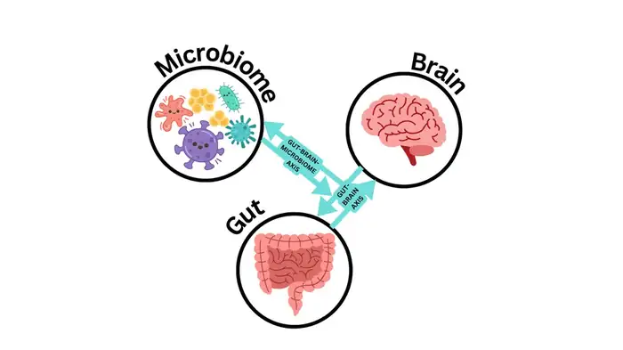
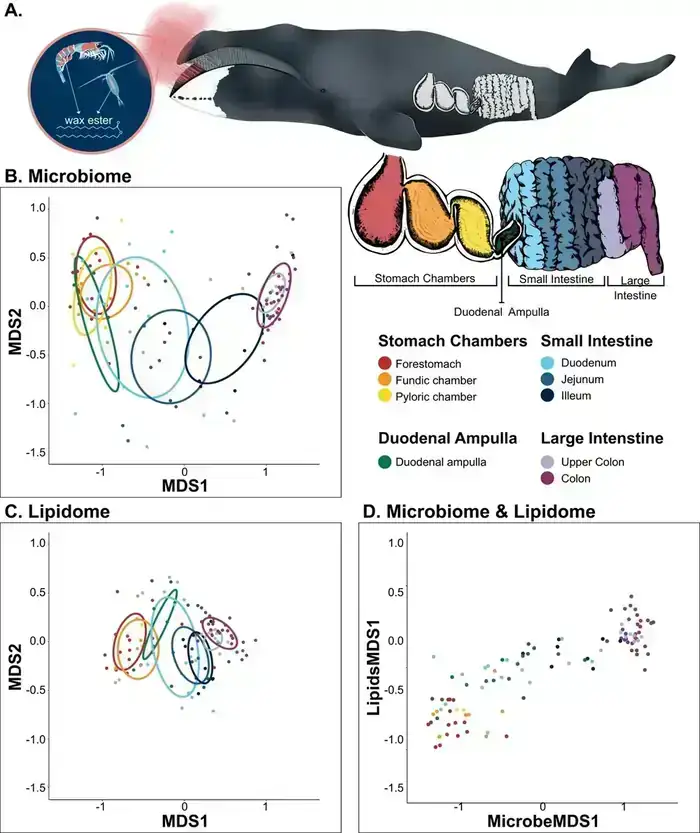
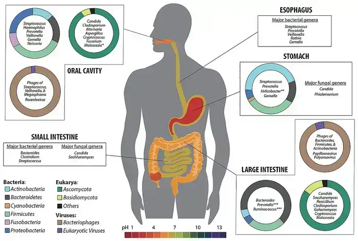

The biology
Intestinal permeability is a real, measurable property: the tight junctions between epithelial cells can open in response to inflammation, stress and other factors, and markers such as zonulin and lactulose/mannitol tests are used in research. Increased permeability is documented in coeliac disease, inflammatory bowel disease and other conditions.
Maps, diagrams and images






The claim
The broader 'leaky gut syndrome' claim holds that increased permeability is a common cause of fatigue, allergies, autoimmune disease and more, and that it can be treated with supplements. The evidence for the syndrome as a distinct diagnosis is weak, and the treatments are not established.
The distinction is between a measurable phenomenon in specific diseases and a general diagnosis sold to the public.
Documented: intestinal permeability and its measurement.
Documented: its role in specific diseases.
Not established: a general syndrome.
Not established: the supplement treatments.
The honest label: live debate.
Why it is in the archive
Because it is a real measurement that became a marketing category, and because the boundary between the two is the page.
Open resources on this topic
- BookEat dirt : why leaky gut may be the root cause of your health problems and 5 surprising steps to cure it — Axe, Josh, author · 2016 (Internet Archive, free to read)
- BookEat Dirt: Why Leaky Gut May Be The Root Cause Of Your Health Problems And 5 Surprising Steps To Cure It (Internet Archive, free to read)
- BookLeaky gut syndrome : what to do about a health threat that can cause arthrities, allergies and a host of other — Lipski, Elizabeth · 1998 (Internet Archive, free to read)
- PapersOpen-access articles: DOAJ · PubMed Central · Internet Archive Scholar
- BooksPublic-domain and borrowable copies: Open Library · Project Gutenberg · Google Books
Cite this page
Momin, S. (2026). Leaky Gut. The Larger World Archive. https://drsamonline.github.io/LARGE_GLOBE/leaky-gut.htmlMomin, Sohil. “Leaky Gut.” The Larger World Archive, 2026, https://drsamonline.github.io/LARGE_GLOBE/leaky-gut.html.Momin, Sohil. “Leaky Gut.” The Larger World Archive, 2026. https://drsamonline.github.io/LARGE_GLOBE/leaky-gut.html.@misc{leaky2026leaky,
author = {Momin, Sohil},
title = {Leaky Gut},
year = {2026},
howpublished = {The Larger World Archive},
url = {https://drsamonline.github.io/LARGE_GLOBE/leaky-gut.html},
note = {Last reviewed 20 November 2026}
}Last reviewed 20 November 2026 · Corrections policy · this page is not peer reviewed
Sources for this page
- Wikipedia, “Intestinal permeability” — the biologyen.wikipedia.org
- Wikipedia, “Tight junction” — the structureen.wikipedia.org
- Wikipedia, “Coeliac disease” — a documented caseen.wikipedia.org
- Wikipedia, “Zonulin” — the markeren.wikipedia.org